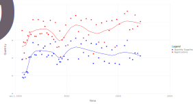

Public housing at scale: Dynamics, policies, and spillovers
Kwok-Hao Lee (NUS and Yale)
with Andrew Ferdowsian (Exeter) and Luther Yap (Princeton)
Created: 2023-09-21 Thu 14:52
1. Introduction
1.1. Motivation
- (Un)Affordable housing
- SF: Housing accounts for 42% of a household’s budget
- HK: 220k people live in shoebox apartments (4’ x 6’)
- SG: Median private home price — US$1.2 million
- “Too bad?”
- Motivates government intervention at scale
- USA: Housing Choice Vouchers, LIHTC
- Today: Focus on public housing in Singapore
1.2. When governments provide public housing at scale…
- People wait years (Amsterdam: 7 years)
- while passing on acceptable but less desirable goods
- Singapore: 12% (2012-2015)
- Seems wasteful; can we do anything about it?
- Can we better design a large-scale public housing program
- Covering 80% of residents in Singapore (1 million apartments), and
- Similar to those in major European and Asian cities?
1.3. Some countries with housing lotteries

1.4. In the Singapore program…
- To encourage homeownership
- the government builds (public) housing
- sold below market prices
- differentiated by location and apartment size
- possibly resold on a regulated aftermarket
- rationed by quarterly lottery over each applicant’s top choice
1.5. Research questions
- What are the effects of changing allocation rules for public housing?
- “… we need to manage the building programme carefully, including allocating new flats in a fair, cost-effective and efficient way.” (Mah 2011, 29)
- Current rules: Apply to 1 each period; must accept if win
- Incentivizes agents to strategically delay
- Consider alternative mechanism without this property
- What are the effects of building slightly more?
Examine impacts on vacancy rates, wait times, and aftermarket prices
- “By 2014… first-time homeowners were counseled publicly to… wait for the new supply… Levies… deter[ed] property [speculation].” (Chua 2017, 92–93)
1.6. Agenda
- Introduce the setting and provide descriptive analysis
- Illustrate key source of inefficiency with theoretical example
- Build dynamic choice model over lotteries for (new) public housing
- Estimate on novel data from the Singaporean mechanism
- Every new complex: number of applications; amenities; prices
- Every aftermarket transaction ever made
- Recover preferences for young households (Dynamic BLP) & owner-occupiers
(Euler CCP)
- Key challenge: endogenous lottery odds & aftermarket prices
- Solution: Cost instruments + Policy shocks to subsidies and OO
- Evaluate rule changes and building more
1.7. Preview of results

1. Building slightly more apartments (10%)…
- …may not alleviate congestion!
- Some agents wait longer
- Vacancies rise; aftermarket prices hardly change
- Inefficiency: Agents “hold out” for competitive developments
- Lose future lotteries? Cannot take today’s apartments
- Building more apartments can worsen this problem
2. Changing allocation rules for public housing…
- … complements increasing supply
A strategyproof mechanism eliminating intertemporal risk…
- makes poor/rich households wait 8%/23% less
- reduces vacancies (12% \( \to \) 7%)
- raises prices on the aftermarket (>12%)
- advantages owner-occupiers over applicants
- If we now build more apartments…
- Wait times remain low
- Relieves upward pressure on aftermarket prices
1.8. Contributions
Evaluate efficiency and spillovers of a large housing assistance program.
- Theoretical: Novel dynamic choice model over (housing) lotteries
- Data: First data set to cover universe of public housing transactions
- Empirical: Evaluate rule changes against a supply increase in housing
market design
- Dynamics matter!
2. Setting
2.1. The Singaporean housing market

2.2. Historical context
80% of Singaporean households live in government housing
- 2021: 1.1m apartments, est. value S$440b
Build-to-order (BTO) mechanism, new government apartments (2001-today)
- S$6.3b/year (US$4.7b/year)
- Administered by the Housing and Development Board (HDB, 1960-today)
- “Sells” 99-year leases to households assigned new apartments
- Intermediates resale on (after)market
Government objective: Provide “affordable, quality public housing option”
- Encourage homeownership
- “Affordable”: \( \leq \) 4x applicant yearly income
- Minimize vacancies
- … and other objectives
2.3. Eligibility for the mechanism
Applicants apply for BTO as a family unit (typically a married couple)
- One must be a Singapore citizen; the other a citizen/PR
- Both aged \( \geq \) 21 years
- Do not own real estate in Singapore or overseas
- Income \( \leq \) S$144,000 a year (60th percentile)
Priority: Focus on “first-timers.”
- 95% of apartments in desirable neighborhoods reserved for them
2.4. Apartment types
- Unit of analysis: Housing development, (location, apartment size) pair
- Apartment types
- 3(4)-room: 2(3) bedrooms, 1 living room
- 5-room: 3 bedrooms, 1 living room, 1 dining room
2.5. Pricing
2.6. Historical context (comparison)
| Characteristic/Settings | “Singapore” (+ Israel, Brazil, …) | Waitlists |
|---|---|---|
| Lease type | Owner-occupation | Rental |
| Lease tenure | \( \geq \) 99 years | 1-2 years (renewable) |
| Lease transferable? | Yes, after min term (SGP: 5 yrs) | No |
| Applicant wealth | Low to moderate | Low |
| Transfer type | Income-specific subsidy + | Direct rent control/ |
| Discount from “resale price” | Voucher | |
| Allocation mechanism | Centralized assignment, lottery | Waitlist |
| Application cycles | Periodic (SGP: Quarterly) | Continuous (FIFO) |
| # Choices per app | 1 | > 1 |
3. Data and Descriptive Facts
3.1. Data: The universe of public housing transactions
- Mechanism (scraped): 403 developments, 900k+ apps (2010-2023)
- Application rates, prices, quantities, nearby amenities
- For now: Restrict to 195 developments over 20 periods (2012-2015)
- In progress: Government microdata of all applications to BTO/SBF
- Secondary market (data.gov.sg): 610k transactions (2000-2023)
- Month/year transacted, location, price, year built
3.2. Location of BTO developments

3.3. Time trends in oversubscription

3.4. Oversubscription and vacancies

3.5. Time dependence
4. Theoretical example of rational delay
4.1. 3 households, 2 houses

4.2. Payoffs

4.3. BTO equilibrium (1)
4.4. BTO equilibrium (2)

4.5. BTO equilibrium (3)

4.6. Building more may not help! (1)

4.7. Building more may not help! (2)

4.8. Building more may not help! (3)
4.9. Building more may not help! (4)
4.10. Could we use better rules? (1)
4.11. Could we use better rules? (2)
4.12. Could we use better rules? (3)

5. Model: Outline of Public Housing Market
- New apartment supply exogenous;
- Owner-occupiers sell or not;
- Applicants enter one lottery, wait, or exit
5.1. Dynamic equilibrium model of housing choice
Every period, new housing developments arrive exogenously.
Existing owner-occupiers
- Infinite horizon, perfect foresight through 2022
- Given the prices they face, either
- Sell off their apartment (terminal); or
- Continue living in it
- Key trade-off: Sell today vs. sell at higher price tomorrow
5.2. Young households
- Finitely-lived, perfect foresight
- Differ by income: Poor and rich
- (In progress: Persistent tastes for, e.g., the west/east)
- Given prefs, prices and odds of success over developments, either
- Apply for one development within the mechanism;
- Wait (live with family); or
- Exit to secondary market
- Key trade-off: Success odds vs. desirability
Markets clear via lottery odds (1\(^{\circ} \)) and prices (2\(^{\circ} \))
6. Model: Details
6.1. Model — Supply
6.2. Secondary market supply equations
- Every quarter: owner-occupier decides whether to sell off her apartment
- Indirect utility from selling is \[ w_{i1t|l} = \rho_0 \bar p^S_{t|l} + \xi_{1t|l} + \epsilon_{i1t|l} \]
- Indirect utility from staying is \[ w_{i0t|l} = \delta^o \mathbb{E}V^o_{it+1|l} + \xi_{0t|l} + \epsilon_{i0t|l} \]
6.3. Secondary market shares
- Market share of sellers of type \( l \) at time \( t \) is \[ s_{1t|l}(\bar p^S_{t|l}) = \frac{\exp[\bar w_{1t|l}(\bar p^S_{t|l})]}{\exp[\bar w_{0t|l}(\bar p^S_{t|l})] + \exp[\bar w_{1t|l}(\bar p^S_{t|l})]} \]
- Supply of secondary market housing is \[ S(\vec{p}^S_t) = \int s_{1t|l}(\bar p^S_{t|l}) \, d\lambda_t(l), \] where \( \lambda_t(l) \) is the housing stock of type \( l \) apartments at time \( t \).
6.4. Model — Demand (Timing)

Cannot participate if I already own a house.
(Details below…)
6.5. Model — Demand (Preferences)
Every period, a fixed number of agents by type \( \theta = (y, \text{loc.}) \) become active in the mechanism.
Specify model backwards.
6.6. Terminal payoffs
Utility of matched households
- BTO apartment \( a \): \[ U_t(a; \theta) = {x_{at}}'\beta^{\theta} - \alpha^{\theta} p^{\theta}_{at} + \alpha^{R\theta} p^R_{at} + \xi_{at} \]
- Apartment on secondary market: \[ U_t(E; \theta) = -\alpha^{\theta} \bar p^S_t + \xi^S_t \]
Flow utility of unmatched households
- If unmatched/waiting, pay waiting cost (utils: \( c^y \))
- Payoff from being unmatched: \[ U_t(0; \theta, \tau) = -c^y + \delta V_{t+1}(\theta, \tau+1) \]
Aside 1a: Evolution of beliefs in counterfactuals
Currently, applying to apartment \( a \) gives mean utility \[ U_t(a; \theta) = {x_{at}}'\beta^{\theta} - \alpha^{\theta} p^{\theta}_{at} + \alpha^{R\theta} \bbox[yellow]{p^R_{at}} + \xi_{at} \]
- Worry: Price movements on secondary market today affect how much I think my apartment will be worth 5+ years in the future
- Proposed solution: Statistical model of beliefs \[ p^R_{at} = \eta_0 + \eta_1 \bar p^S_t + x_{at}'\eta_2 + \epsilon^{\eta}_{at} \]
- Exclusion restriction: \( \mathbb{E}[\epsilon^{\eta}_{at}| \bar p^S_{at},
x_{at}] = 0 \)
- Parameters \( \eta \) describe the best linear predictor
Aside 1b: Evolution of sticker prices
Currently, applying to apartment \( a \) gives mean utility \[ U_t(a; \theta) = {x_{at}}'\beta^{\theta} - \alpha^{\theta} \bbox[yellow]{p^{\theta}_{at}} + \alpha^{R\theta} p^R_{at} + \xi_{at} \]
- Worry: Price movements on secondary market today may move (dispersion of) prices for new developments because of HDB’s stated rule
- Proposed solution: Statistical model of sticker prices \[ p_{at} = \Gamma_0 + \Gamma_1 \bar p^S_t + x_{at}'\Gamma_2 + \epsilon^{\Gamma}_{at} \]
- (Q: Instruments?)
Aside 2: Unequal outside options (e.g., Akbarpour et al 2022)
Currently, specify exit utility as \[ U_t(E; \theta) = -\alpha^{\theta} \bbox[yellow]{\bar p^S_t} + \xi^S_t \]
- Worry: Poor households exit to different apartments from rich
- Proposed solution: Choice-based sampling (e.g., Bayer et al 2009; Barwick et
al 2023)
- Data: Census income bins by planning area; universe of secondary market transactions
- Simulate 1,000 sets of 5 apartments, weighted by neighborhood income
- Given guess of poor preferences, pick “best” apartment, then average across
sims
- (Q: But what about counterfactuals?)
6.7. Choice-specific value functions
- BTO apartment \( a \): \[ v_{it}(a; y, \tau) = q_{at} U_t(a; y) + (1-q_{at})U_t(0; y, \tau) + \epsilon_{iat} \]
- Apartment on secondary market: \[ v_{it}(E; y) = U_t(E; y) + \epsilon^E_{it} \]
- Wait one period: \[ v_{it}(W; y, \tau) = \xi^y_{Wt} + U_t(0; y, \tau) + \epsilon^W_{it}. \]
6.8. Household decision problem
- If unmatched, decides optimally: \[ V_t(y, \tau) = \mathbb{E}\left\{\max_{d \in \mathcal{A}_t \cup \{E, W\}} \mathbb{E}_t[v_{it}(d; y, \tau) | d, \mu_t]\right\} \]
- Possible actions:
- \( d \in \mathcal{A}_t \): apply to BTO apartment \( d \)
- \( d = E \): take apartment on secondary market
- \( d = W \): wait one period
6.9. Market shares
- Market share of BTO apartment \( a \) at time \( t \): \[ s_{at} = M_t^{-1}
\int \frac{\exp(\bar v_{it}(a; y, \tau))}{\exp(\bar v_{it}(E; y)) + \exp(\bar
v_{it}(W; y, \tau)) + \sum_{j \in \mathcal{A}_t} \exp(\bar v_{it}(j; y,
\tau))} \, d\mu_t \]
- Market size \( M_t = \int \, d\mu_t \)
6.10. Model — Equilibrium
In equilibrium,
- [Young households apply/wait/exit optimally]
- [Owner-occupiers sell/remain optimally]
- [Success probabilities in the mechanism are consistent]
- [Sequence of secondary market prices sets demand equal to supply]
7. Estimation: Outline
7.1. Where we are headed
Want to recover…
- young household preferences and wait costs (demand) and
- how likely existing homeowners move when home prices rise (supply).
Supply estimation: Brief
Secondary Market Supply: Price sensitivities recovered via IV-FE regression (Euler CCP; Kalouptsidi, Scott and Souza-Rodrigues 2021)
- Key assumption: Owner-occupier exits after selling off her apartment
- Identification: \( \Delta \) market shares and prices by apartment type over time
- Instruments: Changes to BTO subsidies (2015, 2019)
Demand estimation: Brief
Demand: Recover young household preferences via GMM (“Dynamic BLP”, e.g. Gowrisankaran and Rysman 2012)
- Identification: Every period, applicants face different “menus” of
developments
- Poor also face different prices from rich (explicit subsidies)
- Procedure: Double nested fixed point algorithm
- To recover \( \theta^{*} \), need inner loops recovering \( (\xi^{*}, V^{*}) \)
Demand estimation: Procedure
Demand: Double nested fixed point algorithm (e.g. Gillingham et al 2022)
- Condition on prices and success probabilities observed in data
- Innermost loop: \( V \mid x, \theta, \xi \)
- Obtain model-predicted choice probabilities
- Middle loop: \( \xi \mid x, \theta \)
- Obtain mean utilities setting “model shares = observed shares”
- Form IV-GMM criterion: \( \mathbb{E}[Z\xi] = 0 \)
- Outer loop: \( \theta \mid x \)
Challenge: Price endogeneity
- Instruments: Granite costs + Stamp duty shock (2013) + Differentiation IV (Gandhi and Houde 2021)
8. Estimation: Details
8.1. Supply estimation: Outline
Want to recover how sensitive each household’s moving decision is to changes in their apartment’s price.
- IV-FE regression over each (neighborhood, apartment size) pair (Euler CCP;
Kalouptsidi, Scott and Souza-Rodrigues 2021)
- Avoids repeatedly iterating value functions
- Endogeneity: Price correlated with unobservables
- Instruments: Demand shocks
- Expansion of eligibility for BTO (2015, 2019)
- (Q: Other supply shifters?)
- Identification: \( \Delta \) market shares and prices by apartment type over time
- Results: Elasticity of 3.64 (se: 1.59)
- Higher than new construction (1.75; Saiz 2010) and housing unit provision (0.3; Baum-Snow and Lu 2021)
Supply estimation: Hotz-Miller inversion
By a Hotz-Miller (1993) inversion, the relative attractiveness of selling vs. staying is \[ \Delta_{1,0} \ln s_{t|l} = \Delta_{1,0} \bar w_{t|l} = \rho_0 \bar p^S_{t|l} + x_{1t|l}'\rho_1 + \Delta_{1,0} \xi_{t|l} - \delta^o \mathbb{E}V^o_{t+1|l}.\]
- Selling is a terminal action (Arcidiacono and Miller 2011)
- \( \mathbb{E}V^o_{t+1|l} = \gamma^E + \rho_0 \bar p^o_{t+1|l} + x_{1t+1|l}'\rho_1 + \xi_{1t+1|l} - \ln s_{1t+1|l} \)
Identification — Dynamic Supply
- Mean resale prices \( \bar p^S_{t|l} \) possibly correlated with composite
unobservable \( \tilde \xi_{t|l} \).
- E.g. Work from home trend: agents in larger apartments less likely to vacate, driving prices up but lowering fraction of sellers
- Instrument with (demand-side) policy shocks in 08/2015, 07/2018 and 08/2019.
- The government unexpectedly
- (2015, 2019) raised subsidies + expanded eligibility for BTO
- (2018) tightened Loan-to-Value limits
- Plausibly uncorrelated with period unobservable factors that influence the probability of sale
- The government unexpectedly
Results — Dynamic Supply
res_s = reg(drf, @formula(y ~ (p_adj ~ post2015 + absd2018 + post2019) + fe(flat_type) + fe(town)), Vcov.robust(), save=:fe) IV Fixed Effect Model =============================================================== Number of obs: 4843 Degrees of freedom: 30 R2: -0.171 R2 Adjusted: -0.178 F-Stat: 5.26299 p-value: 0.022 F-Stat (First Stage): 11.9648 p-value (First Stage): 0.000 R2 within: -0.172 Iterations: 5 =============================================================== y | Estimate Std.Error t value Pr(>|t|) Lower 95% Upper 95% --------------------------------------------------------------- p_adj | 0.711783 0.310264 2.29412 0.022 0.103524 1.32004 ===============================================================
Assume discount factor of 0.96 per year
- Mean elasticity: 3.64
- Higher than new construction (1.75; Saiz 2010) and housing unit provision (0.3; Baum-Snow and Lu 2021)
8.2. Demand estimation: Outline
Young household preferences recovered via two-step optimal GMM (“Dynamic BLP”, e.g. Gowrisankaran and Rysman 2012)
- For intuition: Suppose \( |\mathcal{Y}|=1, \bar\tau = 1 \).
- “Invert” market shares to mean utilities
- Regress mean utilities on covariates; residuals \( \xi_{at} \)
- Exogeneity: \( \mathbb{E}[x_{at}\xi_{at}] = 0 \)
Building up to demand estimation
Suppose now \( |\mathcal{Y}| = 2 \).
- Inner loop: \( (\xi \mid x, \theta) \) sets predicted shares equal to observed shares
- Outer loop: \( (\theta \mid x) \) minimizes IV-GMM criterion
In the full model (and when \( \bar \tau > 1 \)): \[ \theta \in \arg\min_{\theta'} g(\theta'; \xi, V)'W g(\theta'; \xi, V) \quad \text{s.t.} \]
- Outer loop (moment conditions): \( g(\theta; \xi, V) = \mathbb{E}[z_{at}\xi_{at}(\theta)] \)
- Middle loop: \( (\xi \mid x, \theta) \) sets \( s(\xi \mid x, \theta) = \hat s \)
- Inner loop: \( (V \mid x, \theta, \xi) \) sets \( \mathbb{T}(V \mid x, \theta, \xi) = V \)
Assumptions on primitives
- Income distribution: Poor/rich, 20%/80% of entrants
- Poor: First-married h/h with secondary education or less
- Heterogeneity of preferences: In price sensitivities \( \alpha^y \) and wait costs \( c^y \)
- Discount factor: \( \delta = 0.96 \) annually
Agent birth-death process
- Share of exiters: 30% of resale market volume
- Number of entrants in each period: 800 poor, 3,200 rich
- Assume: Gov builds housing at rate at which new agents enter
- Market size and composition: 3-year rolling window of first-married resident
households
- Initialize 16k households, 20% poor, decaying exponentially
- Initial conditions problem? Augment data
Initial conditions problem
Initialize 16,000 households, 20% poor, decaying exponentially.
- Estimate model once with these starting conditions, obtaining \( (\hat \theta, \hat \xi) \)
- Augment data
- For 5 periods before start of sample, find 5 periods in sample “closest” to pre-sample stretch
- Append chosen sample stretch to beginning of sample, redrawing \( \xi \sim F_{\hat \xi} \)
8.3. Demand estimation: Endogeneity and identification
Exclusion restriction: \( \mathbb{E}[z_{at} \xi_{at}(\theta)] = 0 \)
- Threats to identification: Endogenous prices and market shares
- Unobserved local amenities
- Unobserved building amenities
Instruments and identifying variation
Instruments
- Cost shifters: e.g., price of granite x apartment size
- Works well in practice!
- Supply shock in January 2013: Higher stamp duties
- Differentiation IVs (Gandhi and Houde 2021)
Identifying variation
- Taste for development characteristics: Within a period/across time,
developments vary in observables and market shares
- Poor also face different prices from rich (explicit subsidies)
- Identifies type-specific coefficients in indirect utilities
- Wait costs: Across periods, applicants face different choice sets
- Not all neighborhoods are available each period
Instrument strength: Cost shifters

Identification of type-specific price coefficients
Poor face different BTO prices from rich \( \Longrightarrow \) \( \alpha^y \) identified.
- Poor households subsidized most for
- smaller apartments
- far from the city center (“non-mature estates”)
- Thought exercise: Assume zero subsidies, then “let them rise” to current
levels
- At outset: Predict same price coefficient
- Later: Poor households tilt applications towards subsidized apartments
- If subsidized apartments are still “too unpopular”, lower \( \alpha^L \)
Caution: Subsequent results are/use old estimates.
8.4. Full demand results
| Parameters | Estimate | S.E. |
|---|---|---|
| Constant | -2.698*** | 1.050 |
| Distance to downtown | -0.143*** | 0.0470 |
| Distance to metro stop | -0.729*** | 0.163 |
| Distance to SAP school | 0.0291 | 0.0389 |
| 4-room flat | 1.987*** | 0.305 |
| 5-room flat | 1.426*** | 0.499 |
| Price | -0.855*** | 0.291 |
| Resale price | 0.569** | 0.232 |
| Subsidized development price | -3.433** | 1.373 |
| Wait cost (Poor) | -1.972*** | 0.346 |
| Wait cost (Rich) | -2.611*** | 0.202 |
| N | 195 |
8.5. Threats to validity
Binscatters of unobservable development quality on covariates

Table of moments
| Targeted | Target | Value (S.D.) | Untargeted | Target | Value (S.D.) |
|---|---|---|---|---|---|
| \( \mathbb{E}[\xi_{at}] \) | 0.0 | -0.03 | \( \mathbb{E}[\xi_{at} \cdot t] \) | 0.0 | -0.81 |
| (1.44) | (20.54) | ||||
| \( \mathbb{E}[\xi_{at} \cdot d_{\text{MBFC}, at}] \) | 0.0 | -0.82 | \( \mathbb{E}[\xi_{at} \cdot d_{\text{school}, at}] \) | 0.0 | -0.03 |
| (16.57) | (0.94) | ||||
| \( \mathbb{E}[\xi_{at} \cdot d_{\text{MRT}, at}] \) | 0.0 | -0.09 | % \( \leq \) 3 apps | >50% | 90% |
| (1.20) |
9. Counterfactuals
9.1. Changing allocation rules
Eliminate intertemporal risk through a variant of RSD!
- Given guess of aftermarket prices, all agents truthfully list their preferences over (eligible) developments and exiting
- At random, each agent assigned preferred development with capacity
In simulations, find aftermarket prices to clear the market.
9.2. Comparing counterfactual outcomes
| Outcome/CF | Baseline | Build: +10% | \( \Delta \) rules | Combined |
|---|---|---|---|---|
| Vacancies | 12% | 16% | 7% | 10% |
| Wait times | Poor: 1.5 years | \( \uparrow \)0.4% | \( \downarrow \)8% | \( \downarrow \)8% |
| Rich: 10 months | \( \downarrow \)3% | \( \downarrow \)23% | \( \downarrow \)23% | |
| Aftermarket prices | S$460k | \( \downarrow \)0.02% | \( \uparrow \)12% | \( \uparrow \)9% |
10. Conclusion
Main takeaways
- Increasing supply is not a panacea for congestion
- Demand response can eclipse the supply increase
- Better rules can improve allocation outcomes…
- but may redistribute
- Changing rules complements increasing supply!
Future research: Optimal public housing location; Interactions with transit
Thank you! (kwokhao [at] nus [dot] edu [dot] sg)
Research agenda
Design of public housing systems
- Better rules complement raising supply (Lee, Ferdowsian, and Yap 2023); Control over supply mix improves efficiency (Ferdowsian, Lee, and Yap 2023)
- Where should a government locate public housing and transit (Lee and Tan 2023)?
Design of transportation systems
- Consumption amenities matter for how transit expansion affects inequality (Lee and Tan 2023)
- Can quotas on automobiles be replaced by a registration/use tax (Lee and Tsai 2023)?
Design of online marketplaces
- Is Amazon self-preferencing? How merchant entry interacts with a platform’s recommender system (Lee and Musolff 2023)
- Product similarity, counterfeiting, and entry deterrence on platform marketplaces (Dou, Lee, and Li 2023)
10.1. Literature review
- Estimating demand for neighborhoods/housing: Bayer, Ferreira and McMillan
(2007); Galiani, Murphy and Pantano (2015); Bayer et al (2016); Fu and Gregory
(2019); Waldinger (2020); Epple, Quintero and Sieg (2020); Davis, Gregory and
Hartley (2021)
- Moving and labor market impacts: e.g. Chyn (2018); Chyn, Hyman and Kapustin (2019); van Dijk (2020)
- Low-income housing/rent control: Diamond and McQuade (2019); Diamond, McQuade and Qian (2019)
- Housing search: Landvoigt, Piazzesi and Schneider (2015); Piazzesi and Schneider (2016); Piazzesi, Schneider and Stroebel (2020)
- Dynamic assignment mechanisms: Budish and Cantillon (2012); Agarwal and Somaini (2018); Agarwal et al (2020); Verdier and Reeling (2021)
- Large market models of one-sided matching: Bogomolnaia and Moulin (2001); Azevedo and Leshno (2016); Abdulkadiroglu et al. (2015); Leshno and Lo (2018)
11. Appendix
11.1. Computing Differentiation IVs
- Predict endogenous prices
- Flexible specification of instruments and exogenous variables
- For each characteristic \( k \) that is either exogenous or a predicted
price,
- Compute the isolation of development \( a \) in \( k \): \[ z_{at, kk} \triangleq \sum_{a' \in \mathcal{A}_t; a' \neq a} (x_{at, k} - x_{a't, k})^2; \]
- With another such characteristic \( k' \), their interaction: \[ z_{at,kk'} \triangleq \sum_{a' \in \mathcal{A}_t; a' \neq a} (x_{at, k} - x_{a't, k})(x_{at, k'} - x_{a't, k'}).\]
11.2. Instrument validity
- Exogeneity
- (Cost shifters + policy shock) Plausibly uncorrelated with unobserved amenities
- (DIV) Need \( \mathbb{E}[\xi_{at}|(x_{at, k} - x_{a't, k})^2_{a'}, z_{at}] = 0 \).
- Relevance: Strong “first stage”.
- To \( s_{at} \): Shifting \( x_{-at} \) mechanically shifts \( s_{at} \)
- To \( p_{at} \): Government passes higher costs of construction to households
- To \( p^S_{at} \): Policy shock discourages holding two properties, so lowers \( p^S_{at} \)
(In progress: Sargan-Hansen (1982) test for instrument strength)
11.3. First stage is strong
When regressing on instruments:
| Variable | F |
|---|---|
| Market shares | 20.42 |
| Sticker price | 153.19 |
| Forward resale price | 85.89 |